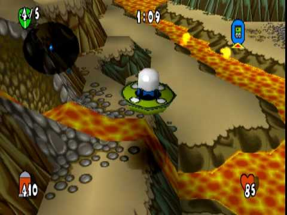
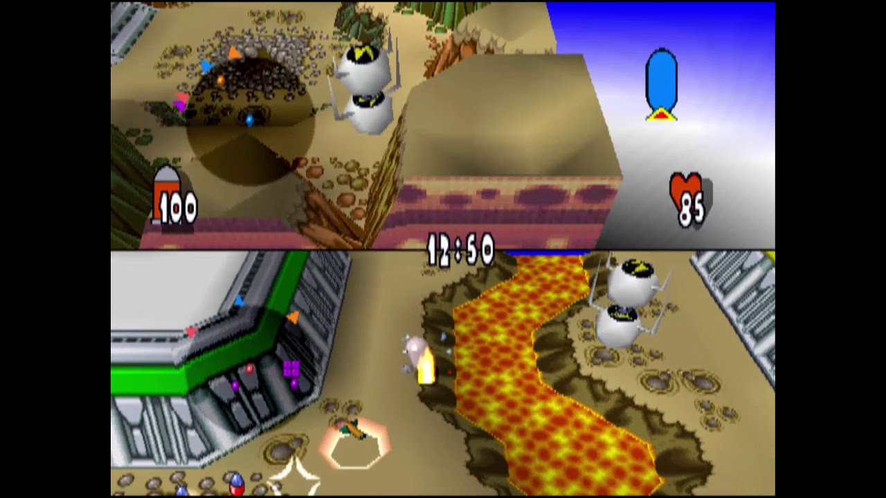

un juego de estrategia en tiempo real adaptado a consola, donde la gestión de recursos las hacemos con el mando y disparando a nuestros rivales.
TEAM BUDDIES
Team Buddies es un videojuego para la consola PlayStation lanzado el 15 de septiembre del año 2000. Desarrollado por SCE Studio Soho.
Team Buddies está formado por varios modos de juego, pero cabe destacar que es, principalmente, un juego de guerra y destrucción del tipo animado.
Modo Historia
En el modo historia se deben cumplir las misiones que se ordenen para desbloquear nuevas armas, niveles, modos de juego y extras para jugar en modo multijugador. La historia consta de 8 mundos, con un jefe final en los mundos 2, 4 ,6 y 8. Cada mundo tiene 4 misiones y un vídeo especial.

Modo Multijugador
Las partidas en modo multijugador se pueden configurar para personalizarlas como se desee. Al entrar se pueden seleccionar los jugadores y sus equipos. Una vez hecho esto, se accederá a poner las opciones de personalización. Estas son las opciones disponibles:

Neiyher danger
Modo de juego
-Destrucción: El único objetivo es ser el único superviviente. -Captura: El objetivo es encerrar animales en tus jaulas para ganar puntos. -Dominación: El objetivo es mantener los objetos del color de tu equipo. -Bomb-Ball: El objetivo es hacer explotar la bomba en la portería del adversario.